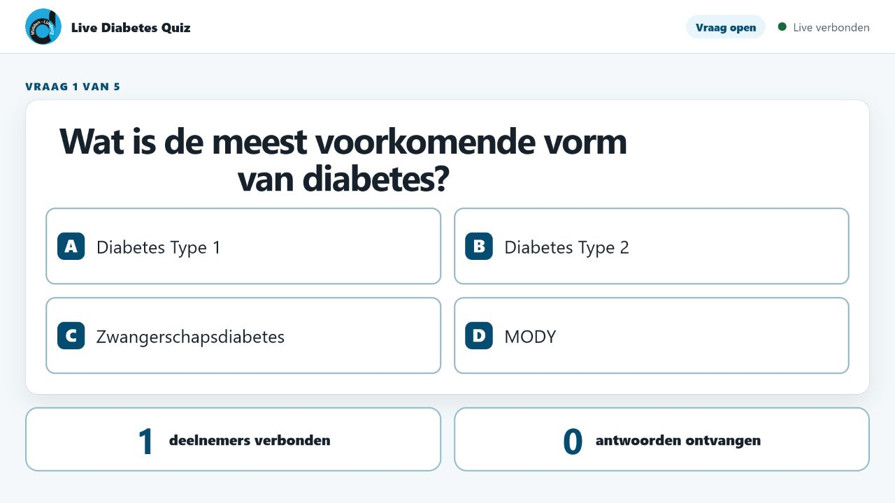

Van voorbereiding tot afsluiting
Eén activiteit, één vast deelnemersbriefje. Ook als u opnieuw begint.
Eerst oefenen? Volg de korte oefenuitleg met uw laptop en één of twee gsm's. Voor een oefening hoeft u geen briefjes af te drukken.
1 · Vooraf thuis of op kantoor
Bereid één activiteit voor
- Controleer vooraf internet en materiaal. De laptop en elke meespelende gsm hebben internet nodig. Eigen mobiele data is meestal het gemakkelijkst. Is de mobiele ontvangst slecht, gebruik dan goed werkende zaalwifi. Werkt de wifi slecht maar mobiele data goed, gebruik dan mobiele data. Vraag wifi-naam en wachtwoord vooraf aan de zaalbeheerder en test de verbindingen zo mogelijk in de zaal. Zonder bruikbaar internet kan deze live quiz niet doorgaan.
- Voorzie een laptop met oplader, een geschikte HDMI-kabel en een tv of projector. De tv zelf heeft via HDMI geen internet nodig. Laat deelnemers hun gsm voldoende opladen en voorzie iemand die kan helpen bij het verbinden.
- Open het quizmasterscherm. Geef uw activiteit een herkenbare naam, bijvoorbeeld “Ledenfeest 18 oktober”. Kies het aantal vragen en klik op Activiteit maken. Vijf vragen is handig om te oefenen; tien is aanbevolen en twintig het aanbevolen maximum.
- Klik op ‘Quizmasterlink bewaren’. U krijgt een HTML-startbestand, bijvoorbeeld ‘Quiz Ledenfeest openen.html’, meestal in de map Downloads. Zet het op uw bureaublad. Later dubbelklikt u op dit bestand: dezelfde quiz opent automatisch in uw browser. Internet blijft nodig. Gaat u een andere laptop gebruiken? Neem het bestand mee, bijvoorbeeld op een USB-stick. Wie het bestand heeft, kan bedienen en definitief afsluiten. Deel het dus alleen met een medeorganisator, nooit met deelnemers. Een eerder bewaarde tekstlink blijft ook geldig.
- Klik op Deelnemersbriefjes afdrukken. Vul beschikbare zaalwifi in, of laat die velden leeg als deelnemers mobiele data gebruiken. Controleer de naam van uw activiteit en druk de briefjes af: twee per staande A4, op 100% schaal en zonder browserkop- en voettekst. Knip ze los en neem reservebriefjes mee.
De briefjes mogen ruim vooraf afgedrukt worden. De QR-code en link blijven hetzelfde bij een nieuwe ronde, een herstart of een andere laptop. Sluit deze activiteit dus niet definitief af tijdens het voorbereiden. Voor een andere gelegenheid maakt u een andere activiteit met nieuwe briefjes.
2 · In de zaal, vóór de deelnemers aankomen
Zet laptop en groot scherm klaar
- Sluit de laptop via HDMI aan en kies op de tv of projector de bijbehorende HDMI-ingang. Controleer opnieuw de internetverbinding.
- Druk op de laptop tegelijk op Windows-toets + P en kies Uitbreiden. De tv toont nu meestal alleen een bureaubladachtergrond. Dat is juist: de twee schermen mogen verschillende vensters tonen.
- Dubbelklik op uw bewaarde bestand ‘Quiz … openen.html’ (of open uw eerder bewaarde quizmasterlink). Uw voorbereide quiz opent. Het quizmasterscherm blijft op de laptop. Klik op Zaalscherm openen.
- Opent dat in een tabblad? Sleep dat tabblad uit de browser zodat het een apart venster wordt. Klik op dat venster en druk op Windows-toets + Shift + → om het naar de tv te verplaatsen. Probeer ← als het scherm aan de andere kant staat. Naar de tv slepen kan ook.
- Druk terwijl het zaalscherm actief is op F11 voor volledig scherm. Op de laptop blijft de bediening; op de tv staat alleen de wachtkamer voor het publiek.
Een korte proef gedaan binnen deze activiteit? Kies daarna Quiz opnieuw beginnen, selecteer het gewenste aantal vragen en klik op Nieuwe ronde klaarzetten. De deelnemersbriefjes blijven geldig.
3 · Bij ontvangst
Help iedereen verbinding maken
- Geef elke deelnemer een briefje bij het binnenkomen. Vraag de gsm klaar te houden.
- Leg rustig uit: “Zorg eerst dat uw gsm op internet zit. Gebruik uw mobiele data of de wifi op het briefje.” Gebruik bij slechte mobiele ontvangst de vooraf geteste zaalwifi. Een wifi-QR-code maakt alleen de internetverbinding, nog niet de verbinding met de quiz.
- “Scan nu de quiz-QR-code met uw camera of QR-app en tik op de link.” Lukt dit niet, laat de volledige link op het briefje in de adresbalk van Chrome of Safari typen. Er is geen cijfercode meer nodig.
- Op de gsm verschijnt U bent verbonden, met de naam van de activiteit. Laat de pagina openstaan. Wie vastloopt steekt de hand op; een helper gaat langs.
- Controleer op uw laptop hoeveel deelnemers verbonden zijn. Begin pas wanneer iedereen die wil meespelen klaar is. Ieder toestel telt als één deelnemer.
Deelnemers hoeven niets te installeren en geen naam of e-mailadres op te geven. Zij krijgen nooit het quizmasterscherm te zien.
4 · Samen spelen
Van eerste vraag tot eindanalyse
- Klik op Start quiz. De vraag en vier antwoorden verschijnen op de tv én op de gsm's. Elke deelnemer tikt één antwoord aan en krijgt een ontvangstbevestiging.
- Wacht tot iedereen voldoende tijd heeft gehad. Voorbeeld: spelen 30 deelnemers mee en staan er 30 ontvangen antwoorden, dan heeft iedereen geantwoord. De teller “nu verbonden” kan dalen als iemand zijn gsm vergrendelt; vraag bij twijfel of iedereen klaar is.
- Wacht tot iedereen heeft geantwoord. Klik daarna op Toon juiste antwoord: de oplossing verschijnt en er kunnen geen antwoorden meer worden ingestuurd. Reageert iemand niet meer? Overleg even; u kunt de oplossing ook tonen als nog niet alle antwoorden binnen zijn.
- Bespreek de oplossing en klik op Volgende vraag. Deelnemers hoeven niets anders te doen; de volgende vraag verschijnt vanzelf.
- Na de laatste oplossing klikt u op Eindanalyse. De tv toont maximaal drie meest fout beantwoorde vragen met hun juiste antwoord. Iedere deelnemer ziet zijn eigen score.

Wat doen de andere knoppen?
Vorige vraag toont een eerdere vraag opnieuw; reeds gegeven antwoorden blijven bewaard. Ronde stoppen en eindanalyse tonen stopt tussentijds alleen de ronde, niet de activiteit. De resultaten betreffen de ontvangen antwoorden.
5 · Nog een ronde of opnieuw beginnen
Dezelfde briefjes blijven werken
Kies Quiz opnieuw beginnen, of na de eindanalyse Nog een quiz spelen. Kies het aantal vragen en bevestig met Nieuwe ronde klaarzetten.
De huidige ronde wordt vervangen door een nieuwe wachtkamer met lege scores. Verbonden gsm's en het zaalscherm volgen automatisch. Wie later opnieuw scant, komt ook bij de nieuwe ronde terecht. Opnieuw afdrukken of scannen is niet nodig.
Met Annuleren — huidige ronde behouden gaat u terug zonder iets te veranderen.
6 · Pas wanneer de hele activiteit voorbij is
Definitief afsluiten
Klik op Activiteit definitief afsluiten en bevestig. Doe dit niet als u nog wilt oefenen of een volgende ronde wilt spelen binnen deze activiteit.
De deelnemers en het zaalscherm zien een bedankmelding. Wie later het briefje scant, ziet Deze activiteit is afgelopen. De briefjes geven geen toegang meer tot een quiz en worden nooit voor een andere gelegenheid hergebruikt. Dit is niet ongedaan te maken.
Als iets misloopt
De laptop of browser is afgesloten
Open de bewaarde quizmasterlink. Dezelfde activiteit en ronde staan klaar; u hoeft geen nieuwe activiteit te maken. Op een andere laptop werkt diezelfde quizmasterlink ook.
Een deelnemer is de pagina kwijt
Scan opnieuw de QR-code van hetzelfde briefje. De huidige ronde opent. In dezelfde browser blijven antwoorden normaal bewaard. Een andere browser of gewiste browsergegevens kan als een nieuwe deelnemer tellen.
De internetverbinding valt weg
Herstel eerst internet. Herlaad daarna zo nodig de pagina. Begin alleen een nieuwe ronde als u werkelijk opnieuw wilt spelen. Zonder internet kan de quiz niet live verdergaan.
Ik ben mijn quizmasterlink kwijt
Open het quizmasterscherm in de oorspronkelijke browser: daar wordt uw laatste activiteit onthouden. Bewaar de quizmasterlink alsnog. Zijn zowel de link als die browsergegevens verloren, dan kan de deelnemerslink de bediening niet herstellen. U moet dan een nieuwe activiteit maken met nieuwe briefjes.
Er staat nog een oude quiz met drie cijfers
Oude sessies blijven toegankelijk volgens hun eerdere werking. Kies vanuit die bediening opnieuw beginnen om over te stappen naar een nieuwe activiteit. Daarvoor drukt u eenmalig nieuwe briefjes af. Pas de nieuwe activiteiten gebruiken de vaste link zonder cijfercode.
De tv toont een oud scherm of niet hetzelfde als de laptop
Bij Uitbreiden zijn de schermen verschillend. Open het zaalscherm vanuit de juiste activiteit en verplaats dat venster naar de tv. Sluit een oud zaalschermvenster. Bij twijfel over de HDMI-verbinding kiest u tijdelijk Windows + P → Dupliceren om te controleren of er beeld is.
Online deelnemers? Stuur hun de deelnemerslink, nooit de quizmasterlink. Ook zij kunnen live antwoorden. Deel via uw bestaande online bijeenkomst het zaalscherm en de stem van de quizmaster voor de gezamenlijke bespreking.
Video's als extra uitleg
Let op: deze video's tonen de eerdere versie. Het spelen en bespreken verloopt nog hetzelfde, maar de cijfercodes en oude sessieknoppen zijn vervangen door de vaste activiteit en quizmasterlink hierboven. Volg voor voorbereiden, herstarten en afsluiten deze geschreven uitleg.